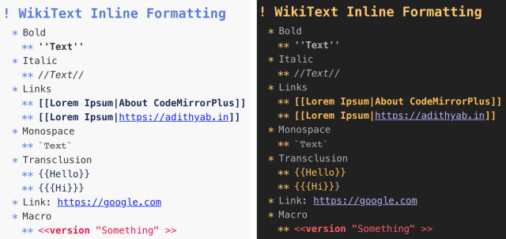
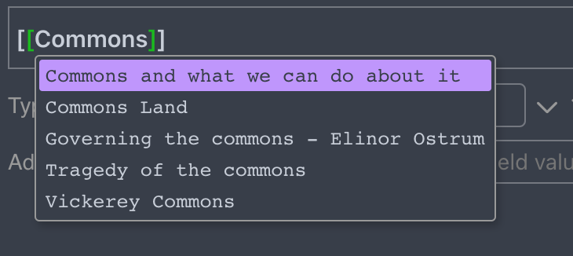

~TiddlyWiki5.1.12+
Release0.2.1
GithubTW5-codemirror-plus
The aim of the project is to create a better experience of typing on TiddlyWiki5.
Features
- Inline formatting / indented lists

- Internal-link autocompletion (Ctrl + Space)

- Customizable colours
Future Wishlist
- Clickable urls
- Formatting/autocompletion for Macros
- List continuation (when typing in a list, pressing enter should add the '*'s at the beginning)
Preview and Installation
- Open the wiki at https://adithya-badidey.github.io/TW5-codemirror-plus/wiki.html.
- Follow directions in "How to Install"